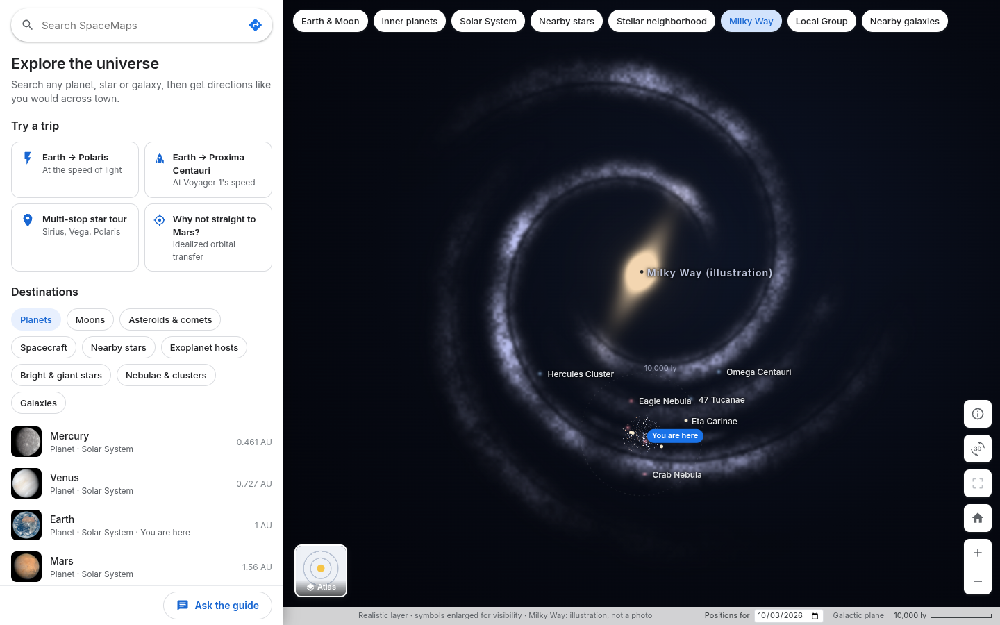
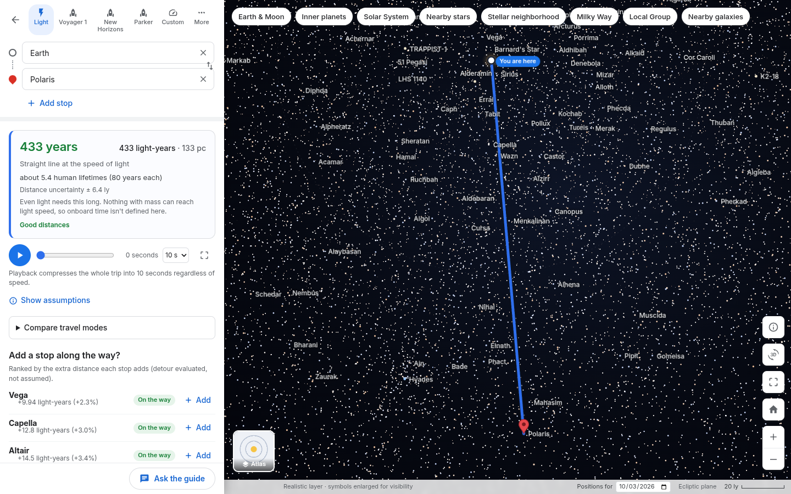
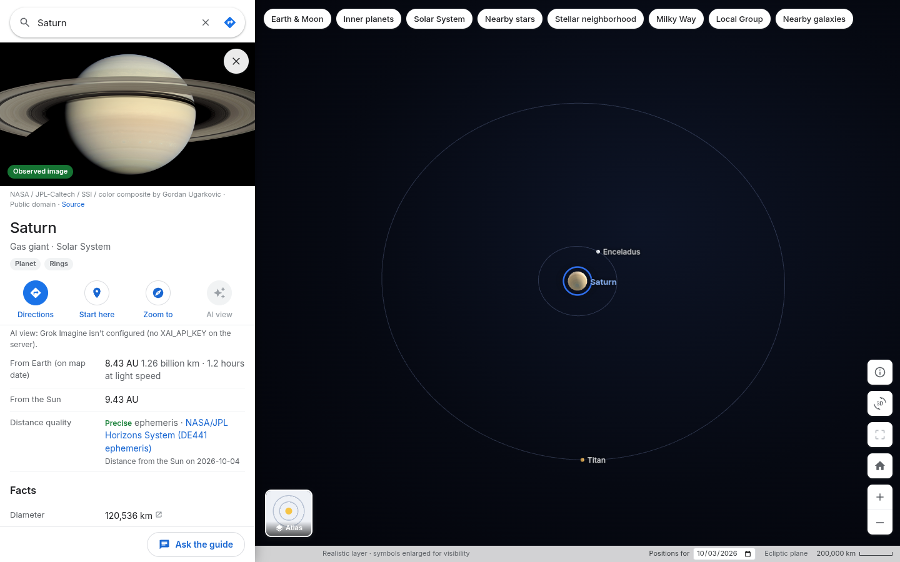
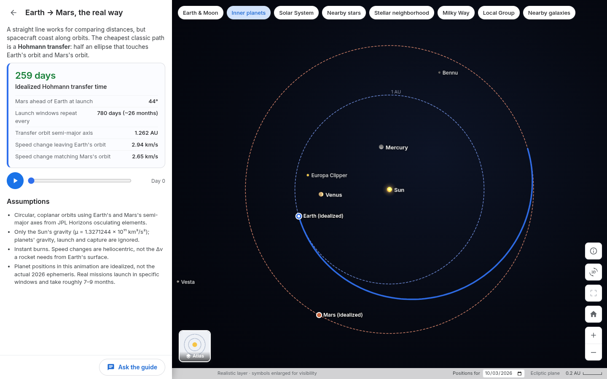
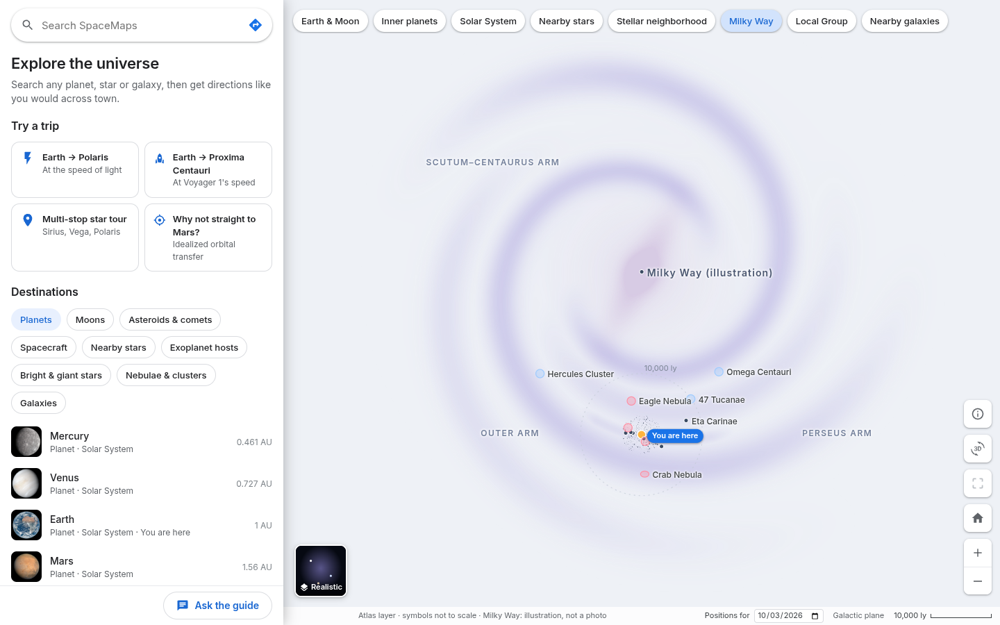
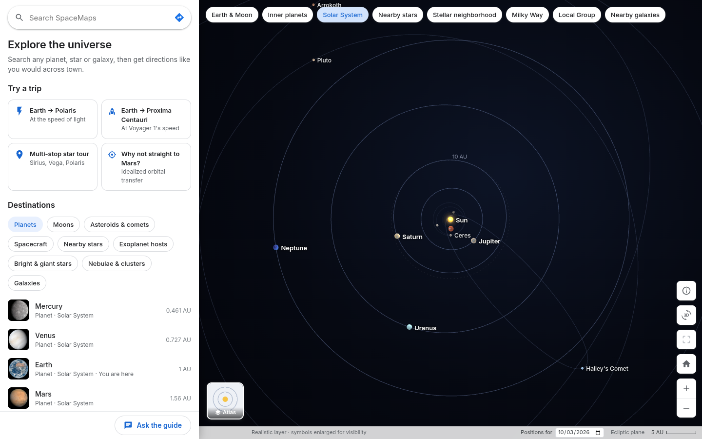

Explore the universe through a familiar, interactive map.
BigRed//Hacks 2026 · Navigation
What if the universe had directions?




Status: Grok Voice and Grok Imagine are implemented not yet tested with a live API key

Thank you! SpaceMaps · BigRed//Hacks 2026